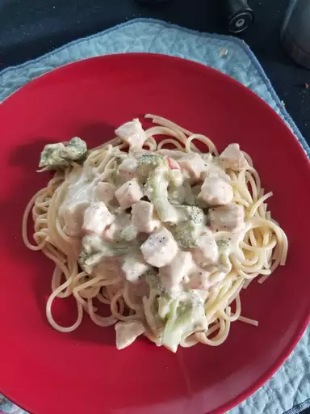

Best Burger Ever

A quick and easy chicken alfredo dinner with broccoli, zucchini,
and red bell pepper. The sauce is enriched by cream cheese.
Ingredients
- 6 ounces of dry fettuccine pasta
- 1 (8 ounce) package of cream cheese
- 6 tablespoons of butter
- 1/2 cup of milk
- 1/2 teaspoon of garlic powder
- Salt and pepper to taste
- 2 skinless and boneless chicken breast halves
cooked and cubed
- 2 cups of chopped fresh broccoli
- 2 small zucchini, julienned
- 1/2 cup of chopped red bell peppers
Steps
- Bring a large pot of lightly salted water to
a boil. Add pasta, and cook for 8 to 10 minutes or
until al dente; drain.
- While pasta is cooking, melt cream cheese and
butter in a skillet over low heat. Stir until smooth.
Stir in milk, and season with garlic powder, salt, and
pepper. Simmer for 3 minutes, or until thickened, stirring
constantly.
- Mix in chicken, broccoli, zucchini, and red pepper
Cook 3 minutes over medium heat, then reduce heat, and simmer
5 minutes, or until vegetables are tender. Serve over fettuccine.